Studiya — son dizayn baxışı
14 şəkil lövhəsi · 41 ekran və vəziyyət. Şəkilə basaraq ayrıca böyüdə bilərsən. Adlar, xallar və statistika nümunədir.
01 · Qarşılama, giriş və qeydiyyat
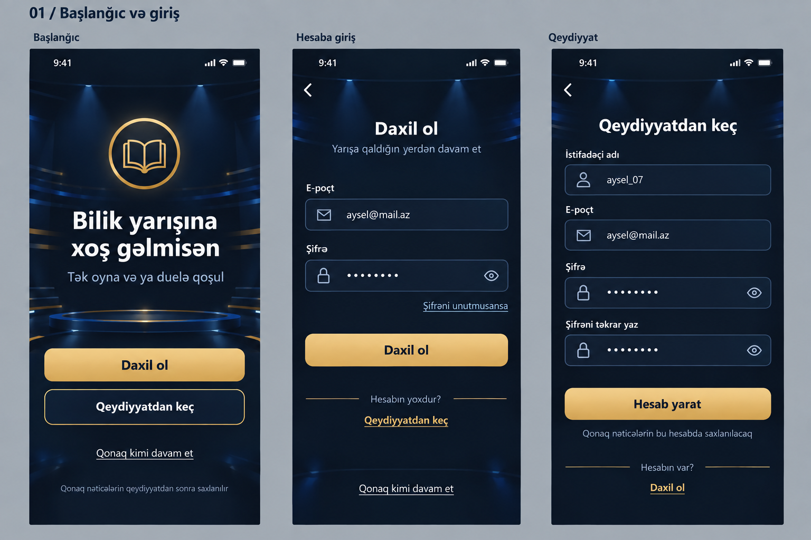
02 · Şifrəni unutdum, bərpa məktubu və yeni şifrə
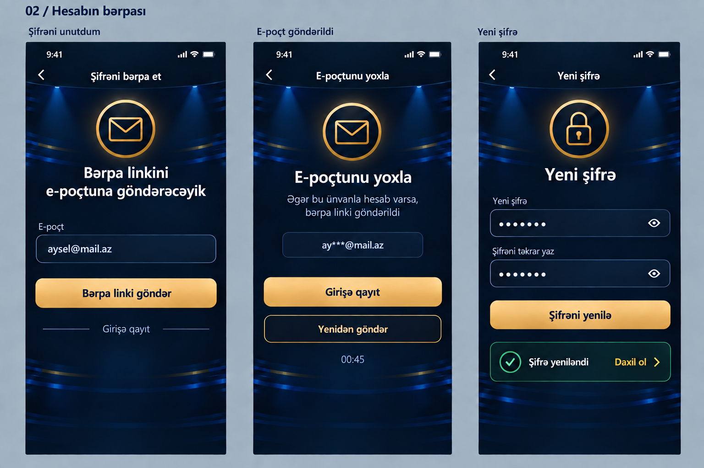
03 · Ana səhifə, solo rankı və duel rankı
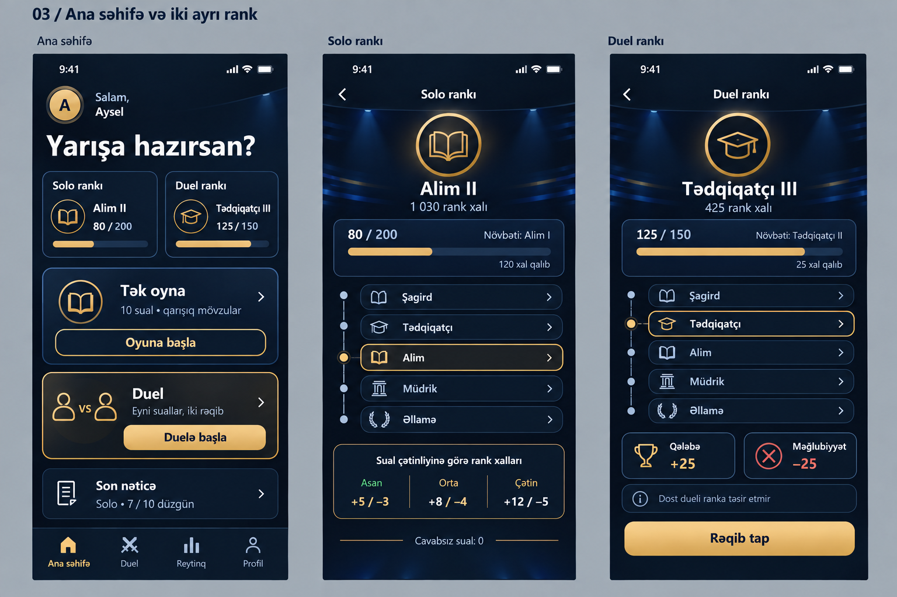
04 · Tək oyna: hazırlıq, sual və nəticə
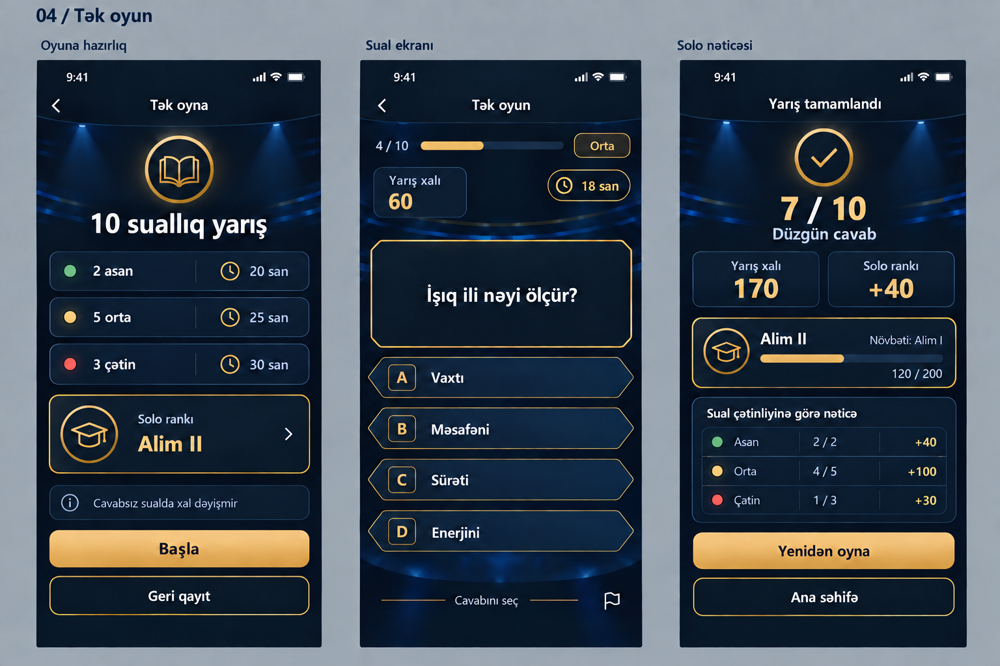
05 · Duel, rəqib axtarışı və dost otağı
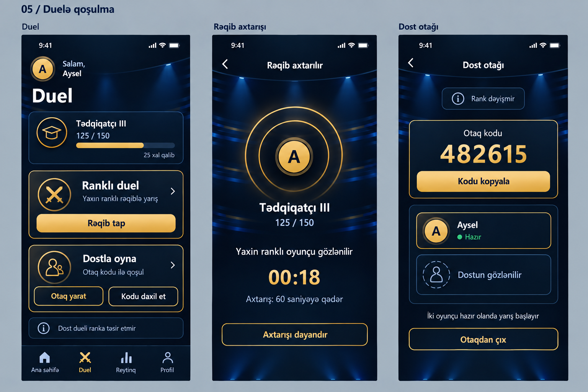
06 · Qarşılaşma, canlı sual və bərabərlik mərhələsi
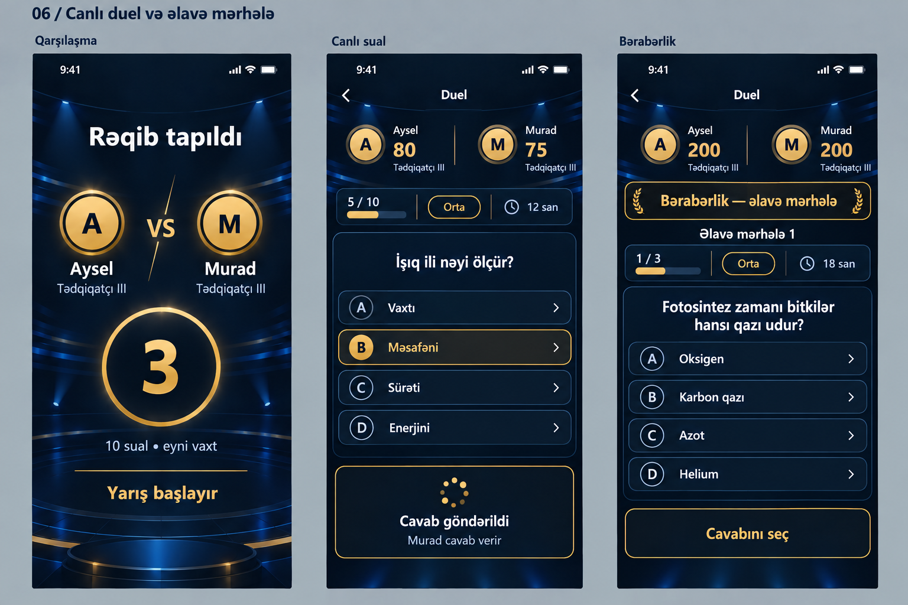
07 · Qələbə, məğlubiyyət və rank yüksəlişi
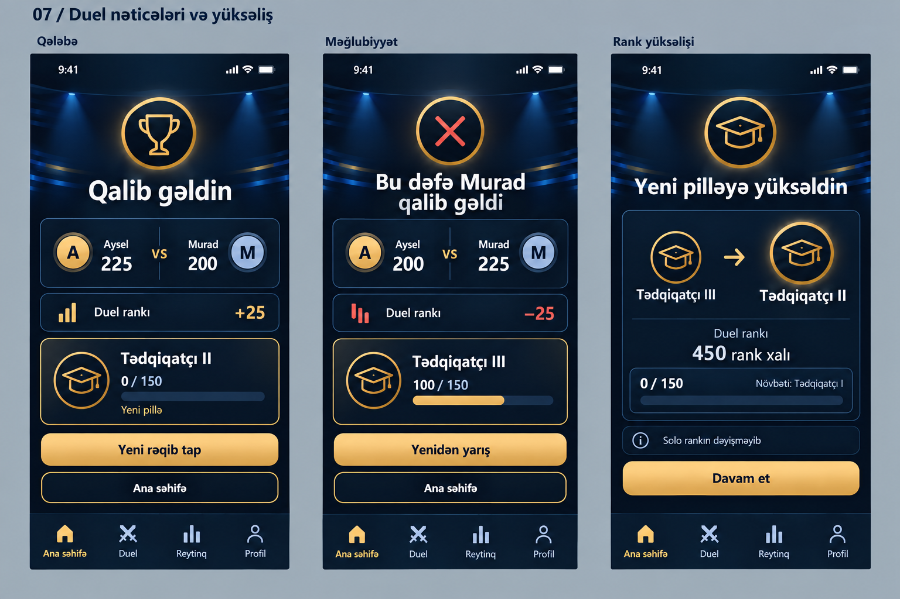
08 · Profil və oyun tarixçəsi
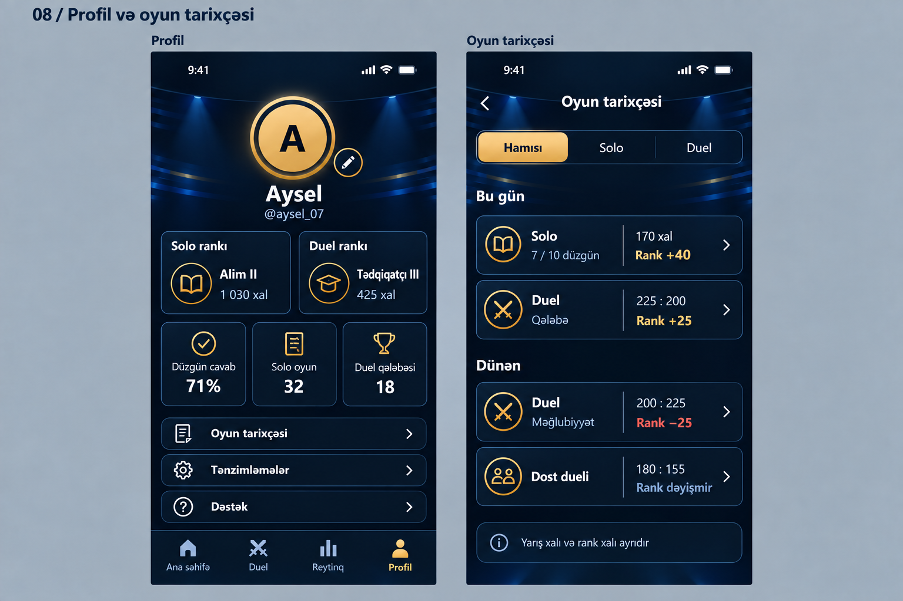
09 · Tənzimləmələr, profildə düzəliş və sualı bildirmək
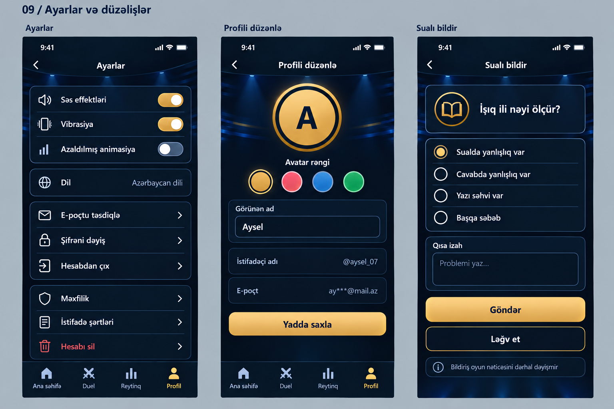
10 · Əlaqə kəsilməsi, rəqib tapılmaması, otağa qoşulma və qonaq reytinqi
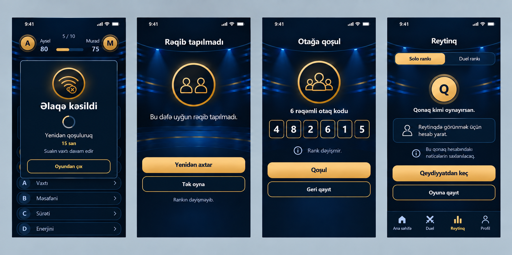
11 · E-poçtun təsdiqi, şifrəni dəyişmək və dəstək
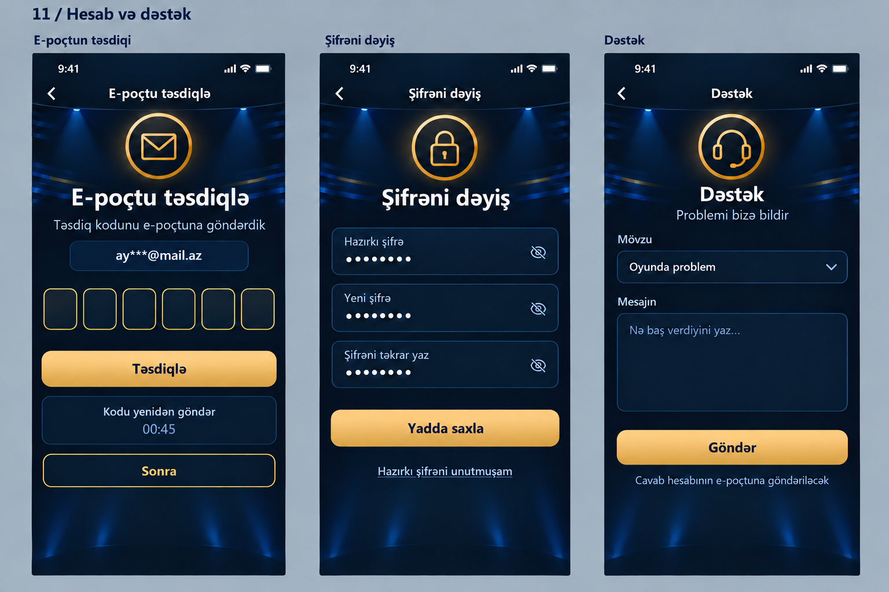
12 · Düzgün cavab, səhv cavab və vaxtın bitməsi
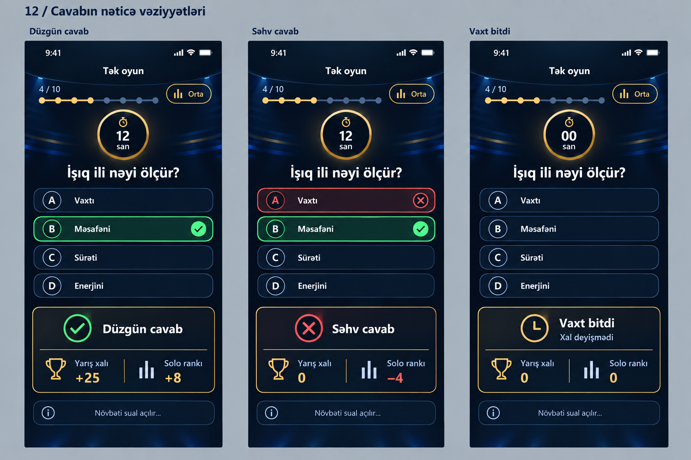
13 · Dueldən çıxış, oyun ləğvi və rankın azalması
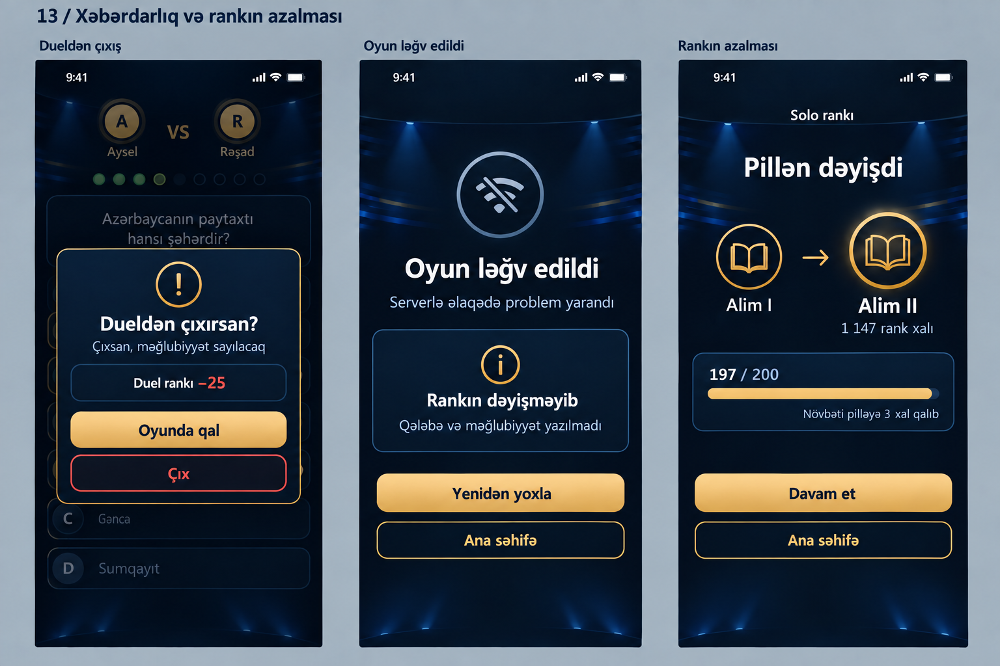
14 · Solo və duel sıralamaları
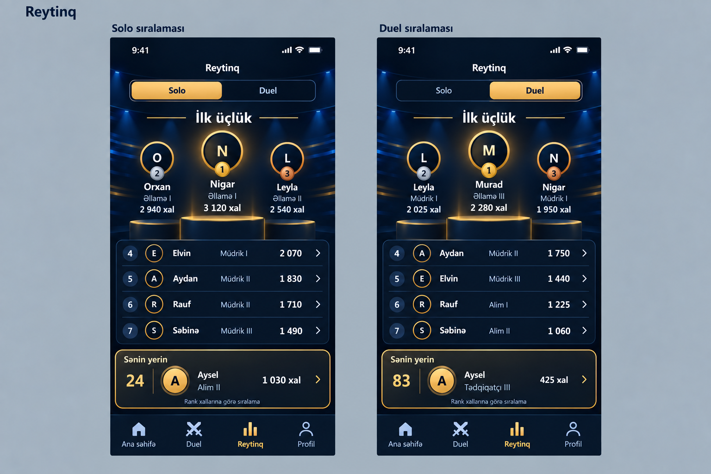